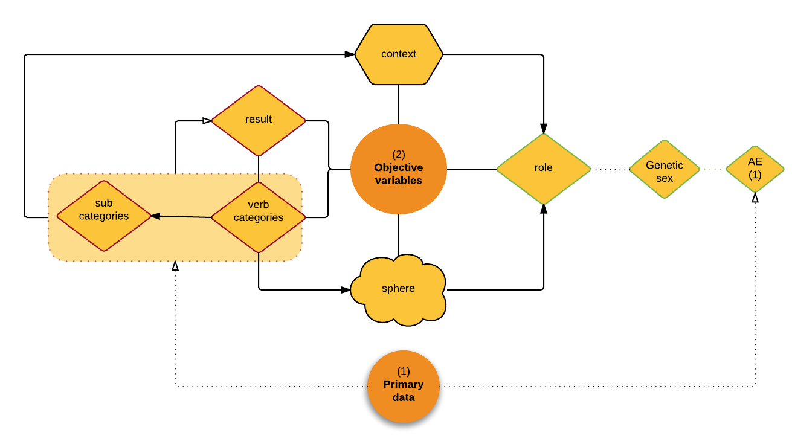

Schema
➯ General process for a hermeneutics of action:
Back to Process for investigating a text ➟ --------------------------------------➯ Primary data schema:
Back to primary data ➟ --------------------------------------➯ Objective variables schema:
 Back to objective variables ➟ --------------------------------------Subjective variables schema:
Back to subjective variables ➟ --------------------------------------